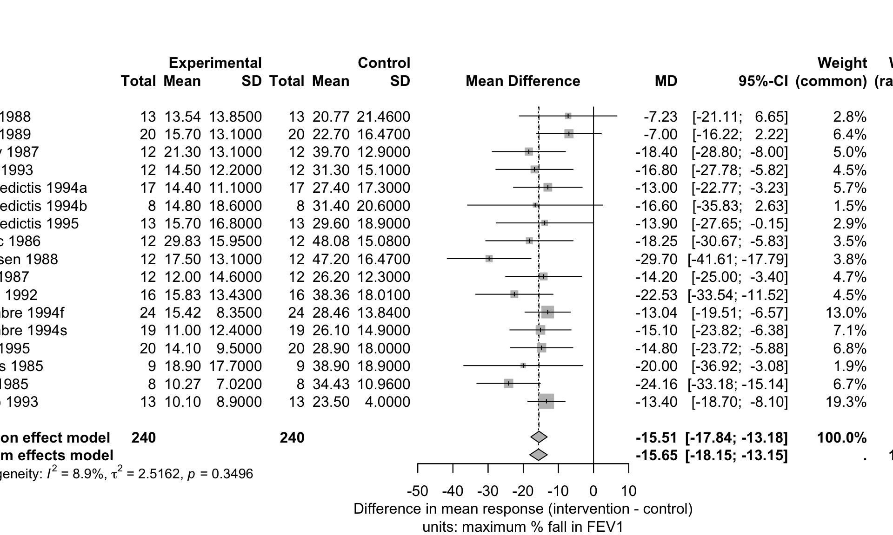
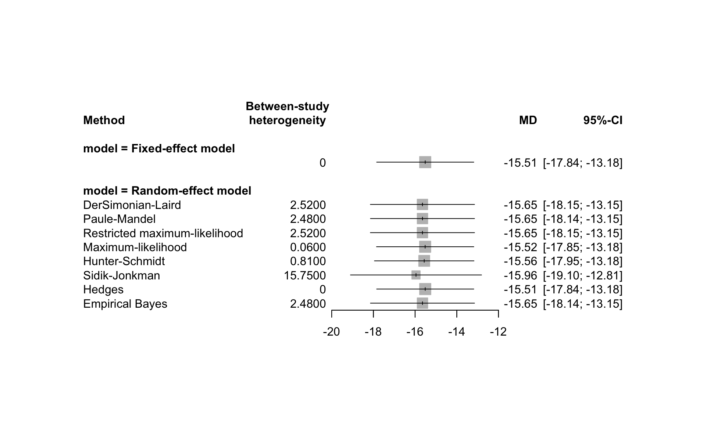
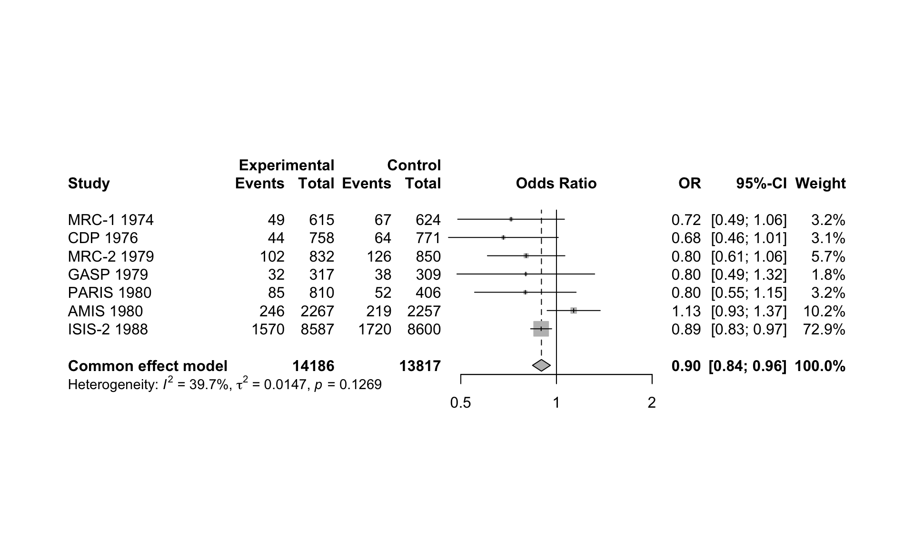

Meta Analysis
Introduction
In general, two types of evidence can be distinguished when performing a meta-analysis: individual participant data (IPD), and aggregate data (AD). > 个体参与者数据 (IPD) 和聚合数据 (AD).
AD 更常见（例如来自文献），通常代表汇总估计，例如优势比或相对风险。这可以使用多种方法在概念上相似的研究中直接综合. IPD 证据代表研究中心收集的原始数据。当需要证据综合时，这种区别提高了对不同元分析方法的需求.
元分析的两种主要方法，即固定效应模型和随机效应模型. 针对这两种模型，都引入了逆方差法 Inverse variance method 进行估计。
- 固定效应模型提供了一系列研究估计的加权平均值。估计方差的倒数通常用作研究权重，因此较大的研究往往比较小的研究对加权平均值的贡献更大。因此，当荟萃分析中的研究以一项非常大的研究为主时，小型研究的结果实际上被忽略了。 最重要的是，固定效应模型假设所有纳入的研究都调查相同的人群，使用相同的变量和结果定义等。这种假设通常是不现实的，因为研究通常容易出现多种异质性来源；例如治疗效果可能因地区、剂量水平、研究条件
- 在随机效应荟萃分析的加权平均过程中应用的权重是通过两个步骤实现的：第 1 步：逆方差加权, 第 2 步：通过应用随机效应方差分量 (REVC) 来取消逆方差加权的权重，该分量简单地从基础研究的效应大小的可变性程度得出。这意味着效应大小的这种变异性（也称为异质性）越大，未加权就越大，这可能会达到随机效应荟萃分析结果成为研究中未加权平均效应大小的程度。
meta-analysis for different data
- Meta-analysis of binary outcome data
metabin - Meta-analysis of continuous outcome data
metacont - Meta-analysis of correlations
metacor - Meta-analysis of incidence rates
metainc - Meta-regression
metareg - Meta-analysis of single proportions
metaprop - Meta-analysis of single means
metamean - Merge pooled results of two meta-analyses
metamerge - Combine and summarize meta-analysis objects
metabind
Meta-Analysis with Survival Outcomes
data4 <- read.csv("./01_Datasets/dataset04.csv", as.is=TRUE)
mg1 <- metagen(logHR, selogHR,
studlab=paste(author, year), data=data4,
sm="HR")
print(mg1, digits=2)## Number of studies: k = 4
##
## HR 95%-CI z p-value
## Common effect model 0.89 [0.78; 1.01] -1.82 0.0688
## Random effects model 0.89 [0.78; 1.01] -1.82 0.0688
##
## Quantifying heterogeneity (with 95%-CIs):
## tau^2 < 0.0001 [0.0000; 1.2885]; tau = 0.0011 [0.0000; 1.1351]
## I^2 = 17.2% [0.0%; 87.3%]; H = 1.10 [1.00; 2.81]
##
## Test of heterogeneity:
## Q d.f. p-value
## 3.62 3 0.3049
##
## Details of meta-analysis methods:
## - Inverse variance method
## - Restricted maximum-likelihood estimator for tau^2
## - Q-Profile method for confidence interval of tau^2 and tau
## - Calculation of I^2 based on QMeta-Analysis of Cross-Over Trials
data5 <- read.csv("./01_Datasets/dataset05.csv", as.is=TRUE)
## meta-analysis of these cross-over trials
mg2 <- metagen(mean, SE, studlab=paste(author, year),
data=data5, sm="MD")
print(summary(mg2), digits=2)## MD 95%-CI %W(common) %W(random)
## Skrabal et al. 1981a -4.50 [ -8.62; -0.38] 2.2 4.6
## Skrabal et al. 1981b -0.50 [ -3.83; 2.83] 3.3 5.0
## MacGregor et al. 1982 -4.00 [ -7.72; -0.28] 2.6 4.8
## Khaw and Thom 1982 -2.40 [ -4.56; -0.24] 7.9 5.6
## Richards et al. 1984 -1.00 [ -7.66; 5.66] 0.8 3.3
## Smith et al. 1985 0.00 [ -3.72; 3.72] 2.6 4.8
## Kaplan et al. 1985 -5.80 [ -8.94; -2.66] 3.7 5.1
## Zoccali et al. 1985 -3.00 [ -8.88; 2.88] 1.1 3.6
## Matlou et al. 1986 -3.00 [ -5.94; -0.06] 4.2 5.2
## Barden et al. 1986 -1.50 [ -4.24; 1.24] 4.9 5.3
## Poulter and Sever 1986 2.00 [ -2.31; 6.31] 2.0 4.5
## Grobbee et al. 1987 -0.30 [ -3.24; 2.64] 4.2 5.2
## Krishna et al. 1989 -8.00 [-12.31; -3.69] 2.0 4.5
## Mullen and O'Connor 1990a 3.00 [ -0.92; 6.92] 2.4 4.7
## Mullen and O'Connor 1990b 1.40 [ -2.52; 5.32] 2.4 4.7
## Patki et al. 1990 -13.10 [-14.47; -11.73] 19.5 5.9
## Valdes et al. 1991 -3.00 [ -6.92; 0.92] 2.4 4.7
## Barden et al. 1991 -0.60 [ -1.78; 0.58] 26.5 5.9
## Overlack et al. 1991 3.00 [ -0.92; 6.92] 2.4 4.7
## Smith et al. 1992 -1.70 [ -6.60; 3.20] 1.5 4.1
## Fotherby and Potter 1992 -6.00 [-10.90; -1.10] 1.5 4.1
##
## Number of studies: k = 21
##
## MD 95%-CI z p-value
## Common effect model -3.71 [-4.32; -3.11] -12.03 < 0.0001
## Random effects model -2.43 [-4.19; -0.66] -2.69 0.0071
##
## Quantifying heterogeneity (with 95%-CIs):
## tau^2 = 13.3645 [6.2066; 27.6896]; tau = 3.6558 [2.4913; 5.2621]
## I^2 = 92.5% [89.9%; 94.5%]; H = 3.66 [3.14; 4.25]
##
## Test of heterogeneity:
## Q d.f. p-value
## 267.24 20 < 0.0001
##
## Details of meta-analysis methods:
## - Inverse variance method
## - Restricted maximum-likelihood estimator for tau^2
## - Q-Profile method for confidence interval of tau^2 and tau
## - Calculation of I^2 based on QFixed Effect Model for Continuous Outcomes
Effect Measures
Meta-analysis typically focuses on comparing two interventions, which we refer to as experimental and control. When the response is continuous (i.e. quantitative) typically the mean, standard deviation and sample size are reported for each group.
\[ \begin{array}{|l|l} \hline n_{e} & \text { Number of patients in the experimental (i.e. active) treatment arm } \\ \hline \hat{\mu}_{e} & \text { Mean response in the experimental treatment arm } \\ \hline s_{e} & \text { Standard deviation of the response in the experimental treatment arm } \\ n_{c} & \text { Number of patients in the control (often equivalent to placebo) arm } \\ \hline \hat{\mu}_{c} & \text { Mean response in the control arm } \\ \hline s_{c} & \text { Standard deviation of the response in the control arm } \\ \hline \end{array} \]
Standardized Mean Difference
Mean difference
For study \(k\), the estimated mean difference is \[ \hat{\mu}_{k}=\hat{\mu}_{e k}-\hat{\mu}_{c k}, \] with variance estimate \[ \widehat{\operatorname{Var}}\left(\hat{\mu}_{k}\right)=\frac{s_{e k}^{2}}{n_{e k}}+\frac{s_{c k}^{2}}{n_{c k}} \] An approximate two-sided \((1-\alpha)\) confidence interval for the mean difference is given by \[ \left(\hat{\mu}_{e k}-\hat{\mu}_{c k}\right) \pm z_{1-\frac{\alpha}{2}} \sqrt{\frac{s_{e k}^{2}}{n_{e k}}+\frac{s_{c k}^{2}}{n_{c k}}} \]
Standardized Mean Difference
当所有研究均以相同规模测量了相关结果, 可以通过汇总各个研究中的平均差异来直接估算总体效果。但 是, 在许多情况下, 不同的研究使用不同的结果量表，例如不同的抑郁量表或生活质量量表。在这种情况 下，我们无法直接合并效果估计值 (均值差异) 。取而代之的是, 我们从每项研究中计算出无量纲的效果 度量 dimensionless effect, 并将其用于合并 一种非常流行的无量纲效果量度是标准化平均差，即研究的平均差除以基于单个治疗组或两个治疗组的标 准差。R包meta的metacont函数基于合并样本方差的标准化均值差，称为Hedges。研究k的标准均值差计 算为: \[ \hat{g}_{k}=\left(1-\frac{3}{4 n_{k}-9}\right) \frac{\hat{\mu}_{e k}-\hat{\mu}_{c k}}{\sqrt{\left(\left(n_{e k}-1\right) s_{e k}^{2}+\left(n_{c k}-1\right) s_{c k}^{2}\right) /\left(n_{k}-2\right)}} \] where \(n_{k}=n_{e k}+n_{c k}\) and the factor \(1-3 /\left(4 n_{k}-9\right)\) corrects for the bias in the estimated standard error. To calculate a confidence interval for \(\hat{g}_{k}\), we need its variance; again following RevMan is calculated as \[ \widehat{\operatorname{Var}}\left(\hat{g}_{k}\right)=\frac{n_{k}}{n_{e k} \cdot n_{c k}}+\frac{\hat{g}_{k}^{2}}{2\left(n_{k}-3.94\right)} \] Once \(\hat{g}_{k}\) and \(\widehat{\operatorname{Var}}\left(\hat{g}_{k}\right)\) are calculated a two-sided \((1-\alpha)\) confidence interval can be calculated by \[\hat{g}_{k} \pm z_{1-\frac{\alpha}{2}} \text { S.E. }\left(\hat{g}_{k}\right)\] Once \(\hat{g}_{k}\) and \(\overline{\operatorname{Var}}\left(\hat{g}_{k}\right)\) are calculated a two-sided \((1-\alpha)\) confidence interval can be calculated by with standard error S.E. \(\left(\hat{g}_{k}\right)=\sqrt{\overline{\operatorname{Var}}\left(\hat{g}_{k}\right)}\) and \(z_{1-\frac{\alpha}{2}}\) denoting the \(1-\frac{\alpha}{2}\) quantile of the standard normal distribution.
- use the metacont function to calculate mean difference and confidence interval
## use the metacont function to calculate mean difference and confidence interval
## sm="MD" (i.e. summary measure is the Mean Difference) as default setting.
data(Fleiss1993cont)
m1 <- metacont(n.psyc, mean.psyc, sd.psyc, n.cont, mean.cont, sd.cont,
data = Fleiss1993cont, sm = "SMD")
m1## Number of studies: k = 5
## Number of observations: o = 232 (o.e = 106, o.c = 126)
##
## SMD 95%-CI z p-value
## Common effect model -0.3434 [-0.6068; -0.0801] -2.56 0.0106
## Random effects model -0.3434 [-0.6068; -0.0801] -2.56 0.0106
##
## Quantifying heterogeneity (with 95%-CIs):
## tau^2 = 0 [0.0000; 0.7255]; tau = 0 [0.0000; 0.8518]
## I^2 = 0.0% [0.0%; 79.2%]; H = 1.00 [1.00; 2.19]
##
## Test of heterogeneity:
## Q d.f. p-value
## 3.68 4 0.4514
##
## Details of meta-analysis methods:
## - Inverse variance method
## - Restricted maximum-likelihood estimator for tau^2
## - Q-Profile method for confidence interval of tau^2 and tau
## - Calculation of I^2 based on Q
## - Hedges' g (bias corrected standardised mean difference; using exact formulae)Inverse variance-weighted average method
There are two methods for the fixed effects model meta-analysis: the IVW and weighted SZ. The fixed effects model assumes that all studies in a meta-analysis share a single true effect size.
固定效应模型假设荟萃分析中成分研究 component studies 的估计效应来自单个同质群体 single homogeneous populatio。 因此，为了计算总体估算值，我们对每项研究的估算值取平均值，从而考虑到某些估算值比其他估算值更为精确的事实（来自较大的研究）
More formally, let \(k=1, \ldots, K\) index study, \(\hat{\theta}_{k}\) denote the intervention effect estimate from study \(k\), and \(\theta\) denote the intervention effect in the population, which we wish to estimate. Denote by \(\hat{\sigma}_{k}^{2}\) the sample estimate of \(\operatorname{Var}\left(\hat{\theta}_{k}\right)\). The fixed effect model is \[ \hat{\theta}_{k}=\theta+\sigma_{k} \epsilon_{k}, \quad \epsilon_{k}^{\mathrm{i} . \mathrm{i} . \mathrm{d} .} N(0,1) \] We now consider the fixed effect estimate of \(\theta\), denoted by \(\hat{\theta}_{F}\). Given estimates \(\left(\hat{\theta}_{k}, \hat{\sigma}_{k}\right), k=1, \ldots, K\), the maximum-likelihood estimate under model (2.7) is \[ \hat{\theta}_{F}=\frac{\sum_{k=1}^{K} \hat{\theta}_{k} / \hat{\sigma}_{k}^{2}}{\sum_{k=1}^{K} 1 / \hat{\sigma}_{k}^{2}}=\frac{\sum_{k=1}^{K} w_{k} \hat{\theta}_{k}}{\sum_{k=1}^{K} w_{k}} \] Accordingly, \(\hat{\theta}_{F}\) is a weighted average of the individual effect estimates \(\hat{\theta}_{k}\) with weights \(w_{k}=1 / \hat{\sigma}_{k}^{2}\). Therefore, this method is called the inverse variance method. The variance of \(\hat{\theta}_{F}\) is estimated by \[ \widehat{\operatorname{Var}}\left(\hat{\theta}_{F}\right)=\frac{1}{\sum_{k=1}^{K} w_{k}} \] \((1-\alpha)\) confidence interval for \(\hat{\theta}_{F}\) can be calculated by \[\hat{\theta}_{F} \pm z_{1-\frac{\alpha}{2}} \text { SE }\left(\hat{\theta}_{F}\right)\]
data1 <- read.csv("./01_Datasets/dataset01.csv", as.is=TRUE)
data2 <- read.csv("./01_Datasets/dataset02.csv", as.is=TRUE)
## The fixed effect estimate and its variance can be calculated using base R code
## 1. Calculate mean difference, variance and weights
MD <- with(data1, Me - Mc)
varMD <- with(data1, Se^2/Ne + Sc^2/Nc)
weight <- 1/varMD
## 2. Calculate the inverse variance estimator
## the standard weighted.mean function is used to calculate theta_F.
round(weighted.mean(MD, weight), 4)## [1] -15.514## 3. Calculate the variance
round(1/sum(weight), 4)## [1] 1.4126## Alternative easier using the metacont function which yields identical results
mc1 <- metacont(Ne, Me, Se, Nc, Mc, Sc,
data=data1,
studlab=paste(author, year))
round(c(mc1$TE.fixed, mc1$seTE.fixed^2), 4)## [1] -15.5140 1.4126## Forest Plot
## pdf(file="Schwarzer-Fig2.3.pdf", width=9.6)
## uncomment line to generate PDF file
forest(mc1, comb.random=FALSE, xlab=
"Difference in mean response (intervention - control)
units: maximum % fall in FEV1",
xlim=c(-50,10), xlab.pos=-20, smlab.pos=-20)
## invisible(dev.off())
## uncomment line to save PDF fileGeneric inverse variance meta-analysis metagen
Fixed effect and random effects meta-analysis based on estimates (e.g. log hazard ratios) and their standard errors. The inverse variance method is used for pooling.
- sm: A character string indicating underlying summary measure, e.g., “RD”, “RR”, “OR”, “ASD”, “HR”, “MD”, “SMD”, or “ROM”.
- Confidence intervals for individual studies: For the mean difference
(argument sm = “MD”), the confidence interval for individual studies can
be based on the
- standard normal distribution (method.ci = “z”), or
- t-distribution (method.ci = “t”).
- Estimation of between-study variance:
method.tau = "DL"DerSimonian-Laird estimator (DerSimonian and Laird, 1986)method.tau = "PM"Paule-Mandel estimator (Paule and Mandel, 1982)method.tau = "REML"Restricted maximum-likelihood estimator (Viechtbauer, 2005)method.tau = "ML"Maximum-likelihood estimator (Viechtbauer, 2005)method.tau = "HS"Hunter-Schmidt estimator (Hunter and Schmidt, 2015)method.tau = "SJ"Sidik-Jonkman estimator (Sidik and Jonkman, 2005)method.tau = "HE"Hedges estimator (Hedges and Olkin, 1985)method.tau = "EB"Empirical Bayes estimator (Morris, 1983)
- Confidence interval for the between-study variance:
method.tau.ci = "J"Method by Jackson (2013)method.tau.ci = "BJ"Method by Biggerstaff and Jackson (2008)method.tau.ci = "QP"Q-Profile method (Viechtbauer, 2007)method.tau.ci = "PL"Profile-Likelihood method for three-level meta-analysis model (Van den Noortgate et al., 2013)
mc1.gen <- metagen(TE, seTE, data=mc1, sm="MD")
## Print results for fixed effect and random effects method
c(mc1$TE.fixed, mc1$TE.random)## [1] -15.51403 -15.64702c(mc1.gen$TE.fixed, mc1.gen$TE.random)## [1] -15.51403 -15.64702Weighted Sum of Z-Scores
Another popular method for the fixed effects model meta-analysis is calculating the weighted SZ from the follows studies. Let \(Z_{i}\) be the z-score from study \(i\), which \(N(0,1)\) under the null hypothesis of no effects. Then, the weighted SZ statistic is \[ Z_{S Z}=\frac{\sum w_{S Z, i} Z_{i}}{\sqrt{\sum w_{S Z, i}{ }^{2}}} \] By the characteristic of a normal distribution, \(\mathrm{Z}_{\mathrm{SZ}}\) also follows \(N(0,1)\) under the null hypothesis. To combine z-scores from multiple studies, a per-study sample size was suggested as weights of each study, as follows: \[ w_{S Z, i}=\sqrt{N_{i}} \]
Random Effects Model for Continuous Outcomes
Introduction
The random effects model seeks to account for the fact that the study effect estimates \(\hat{\theta}_{k}\) are often more variable than assumed in the fixed effect model. Under the random effects model, \[ \hat{\theta}_{k}=\theta+u_{k}+\sigma_{k} \epsilon_{k}, \quad \epsilon_{k}^{\text {i.i.d. }} N(0,1) ; u_{k}^{\text {i.i.d. }} N\left(0, \tau^{2}\right) \] where the \(u\) ’s and \(\epsilon\) ’s are independent. Define \[ Q=\sum_{k=1}^{K} w_{k}\left(\hat{\theta}_{k}-\hat{\theta}_{F}\right)^{2} \] the weighted sum of squares about the fixed effect estimate with \(w_{k}=1 / \hat{\sigma}_{k}^{2}\). This is usually referred to as either the homogeneity test statistic or the heterogeneity statistic. Next define \[ S=\sum_{k=1}^{K} w_{k}-\frac{\sum_{k=1}^{K} w_{k}^{2}}{\sum_{k=1}^{K} w_{k}} \] If \(Q<(K-1)\), then \(\hat{\tau}^{2}\) is set to 0 and the random effects estimate \(\hat{\theta}_{R}\) is set equal to the fixed effect estimate \(\hat{\theta}_{F}\). Otherwise, the Dersimonian-Laird estimator of the between-study variance is defined as \[ \hat{\tau}^{2}=\frac{Q-(K-1)}{S} \] and the random effects estimate and its variance are given by \[ \begin{array}{c} \hat{\theta}_{R}=\frac{\sum_{k=1}^{K} w_{k}^{*} \hat{\theta}_{k}}{\sum_{k=1}^{K} w_{k}^{*}} \\ \operatorname{Var}\left(\hat{\theta}_{R}\right)=\frac{1}{\sum_{k=1}^{K} w_{k}^{*}} \end{array} \] with weights \(w_{k}^{*}=1 /\left(\hat{\sigma}_{k}^{2}+\hat{\tau}^{2}\right)\). The random effects estimator \(\hat{\theta}_{R}\) is a weighted average of the individual effect estimates \(\hat{\theta}_{k}\) with weights \(1 /\left(\hat{\sigma}_{k}^{2}+\hat{\tau}^{2}\right)\). Accordingly, this method is often called “Inverse variance method”, too. A \((1-\alpha)\) confidence interval for \(\hat{\theta}_{R}\) can be calculated by \[\hat{\theta}_{R} \pm z_{1-\frac{\alpha}{2}} \text { S.E. }\left(\hat{\theta}_{R}\right)\]
Implementation
Estimation of Between-Study Variance
- DerSimonian–Laird estimator (method.tau=“DL”) (default)
- Paule–Mandel estimator (method.tau=“PM”)
- Restricted maximum-likelihood estimator (method.tau=“REML”)
- Maximum-likelihood estimator (method.tau=“ML”)
- Hunter–Schmidt estimator (method.tau=“HS”)
- Sidik–Jonkman estimator (method.tau=“SJ”)
- Hedges estimator (method.tau=“HE”)
- Empirical Bayes estimator (method.tau=“EB”).
# 1. Conduct meta-analyses
# 1a. DerSimonian-Laird estimator (default)
mg1.DL <- metagen(TE, seTE, data=mc1)
# 1b. Paule-Mandel estimator
mg1.PM <- metagen(TE, seTE, data=mc1, method.tau="PM")
# 1c. Restricted maximum-likelihood estimator
mg1.RM <- metagen(TE, seTE, data=mc1, method.tau="REML")
# 1d. Maximum-likelihood estimator
mg1.ML <- metagen(TE, seTE, data=mc1, method.tau="ML")
# 1e. Hunter-Schmidt estimator
mg1.HS <- metagen(TE, seTE, data=mc1, method.tau="HS")
# 1f. Sidik-Jonkman estimator
mg1.SJ <- metagen(TE, seTE, data=mc1, method.tau="SJ")
# 1g. Hedges estimator
mg1.HE <- metagen(TE, seTE, data=mc1, method.tau="HE")
# 1h. Empirical Bayes estimator
mg1.EB <- metagen(TE, seTE, data=mc1, method.tau="EB")
# 2. Extract between-study variance tau-squared
tau2 <- data.frame(tau2=round(c(0,
mg1.DL$tau^2, mg1.PM$tau^2,
mg1.RM$tau^2, mg1.ML$tau^2,
mg1.HS$tau^2, mg1.SJ$tau^2,
mg1.HE$tau^2, mg1.EB$tau^2), 2),
row.names=c("FE", "DL", "PM", "REML", "ML",
"HS", "SJ", "HE", "EB"))
# 3. Print tau-squared values
t(tau2)## FE DL PM REML ML HS SJ HE EB
## tau2 0 2.52 2.48 2.52 0.06 0.81 15.75 0 2.48# 4. Create dataset with summaries
res <- data.frame(MD=c(mg1.DL$TE.fixed,
mg1.DL$TE.random, mg1.PM$TE.random,
mg1.RM$TE.random, mg1.ML$TE.random,
mg1.HS$TE.random, mg1.SJ$TE.random,
mg1.HE$TE.random, mg1.EB$TE.random),
seMD=c(mg1.DL$seTE.fixed,
mg1.DL$seTE.random, mg1.PM$seTE.random,
mg1.RM$seTE.random, mg1.ML$seTE.random,
mg1.HS$seTE.random, mg1.SJ$seTE.random,
mg1.HE$seTE.random, mg1.EB$seTE.random),
method=c("",
"DerSimonian-Laird",
"Paule-Mandel",
"Restricted maximum-likelihood",
"Maximum-likelihood",
"Hunter-Schmidt",
"Sidik-Jonkman",
"Hedges",
"Empirical Bayes"),
tau2=tau2,
model=c("Fixed-effect model",
rep("Random-effect model", 8)))
knitr::kable(res)| MD | seMD | method | tau2 | model | |
|---|---|---|---|---|---|
| FE | -15.51403 | 1.188538 | 0.00 | Fixed-effect model | |
| DL | -15.64702 | 1.274628 | DerSimonian-Laird | 2.52 | Random-effect model |
| PM | -15.64543 | 1.273478 | Paule-Mandel | 2.48 | Random-effect model |
| REML | -15.64702 | 1.274628 | Restricted maximum-likelihood | 2.52 | Random-effect model |
| ML | -15.51773 | 1.190701 | Maximum-likelihood | 0.06 | Random-effect model |
| HS | -15.56254 | 1.217847 | Hunter-Schmidt | 0.81 | Random-effect model |
| SJ | -15.95615 | 1.603754 | Sidik-Jonkman | 15.75 | Random-effect model |
| HE | -15.51403 | 1.188538 | Hedges | 0.00 | Random-effect model |
| EB | -15.64543 | 1.273478 | Empirical Bayes | 2.48 | Random-effect model |
# 5. Do meta-analysis
m <- metagen(MD, seMD, data=res,
studlab=method,
sm="MD",
comb.fixed=FALSE, comb.random=FALSE,
byvar=model)
knitr::kable(m)| studlab | TE | seTE | statistic | pval | df | lower | upper | w.common | w.random | zval | subgroup | w.fixed | byvar |
|---|---|---|---|---|---|---|---|---|---|---|---|---|---|
| -15.51403 | 1.188538 | -13.053036 | 0 | NA | -17.84353 | -13.18454 | 0.7079028 | 0.7079028 | -13.053036 | Fixed-effect model | 0.7079028 | Fixed-effect model | |
| DerSimonian-Laird | -15.64702 | 1.274628 | -12.275758 | 0 | NA | -18.14525 | -13.14880 | 0.6155073 | 0.6155073 | -12.275758 | Random-effect model | 0.6155073 | Random-effect model |
| Paule-Mandel | -15.64543 | 1.273478 | -12.285593 | 0 | NA | -18.14140 | -13.14946 | 0.6166196 | 0.6166196 | -12.285593 | Random-effect model | 0.6166196 | Random-effect model |
| Restricted maximum-likelihood | -15.64702 | 1.274628 | -12.275758 | 0 | NA | -18.14525 | -13.14880 | 0.6155073 | 0.6155073 | -12.275758 | Random-effect model | 0.6155073 | Random-effect model |
| Maximum-likelihood | -15.51773 | 1.190701 | -13.032432 | 0 | NA | -17.85146 | -13.18400 | 0.7053334 | 0.7053334 | -13.032432 | Random-effect model | 0.7053334 | Random-effect model |
| Hunter-Schmidt | -15.56254 | 1.217847 | -12.778728 | 0 | NA | -17.94947 | -13.17560 | 0.6742399 | 0.6742399 | -12.778728 | Random-effect model | 0.6742399 | Random-effect model |
| Sidik-Jonkman | -15.95615 | 1.603754 | -9.949252 | 0 | NA | -19.09945 | -12.81285 | 0.3887986 | 0.3887986 | -9.949252 | Random-effect model | 0.3887986 | Random-effect model |
| Hedges | -15.51403 | 1.188538 | -13.053036 | 0 | NA | -17.84353 | -13.18454 | 0.7079028 | 0.7079028 | -13.053036 | Random-effect model | 0.7079028 | Random-effect model |
| Empirical Bayes | -15.64543 | 1.273478 | -12.285593 | 0 | NA | -18.14140 | -13.14946 | 0.6166196 | 0.6166196 | -12.285593 | Random-effect model | 0.6166196 | Random-effect model |
# 6. Do forest plot
# pdf(file="Schwarzer-Fig2.5.pdf", width=8.1, height=4.0)
# uncomment line to generate PDF file
forest(m,
xlim=c(-20, -12),
hetstat=FALSE, smlab="",
leftcols=c("studlab", "tau2"),
leftlabs=c("Method", "Between-study\nheterogeneity"),
print.byvar=FALSE)
# invisible(dev.off()) # uncomment line to save PDF file Hartung-Knapp Adjustment
Hartung and Knapp (2001a,b) proposed an alternative method for random effects meta-analysis based on a refined variance estimator for the treatment estimate. Simulation studies (Hartung and Knapp, 2001a,b; IntHout et al., 2014; Langan et al., 2019) show improved coverage probabilities compared to the classic random effects method.
Hartung和Knapp 在随机效应模型中引入了一种基于改进方差估计器的新的会萃分析方法。与DerSimonianLaird方法相比，首选Hartung-Knapp方法。 代替使方差估计 \[ \widehat{\operatorname{Var}}\left(\hat{\theta}_{R}\right)=\frac{1}{\sum_{k=1}^{K} w_{k}^{*}} \] Instead of using the variance estimate given in Eq. (2.14), Hartung and Knapp propose to use the following variance estimator for \(\hat{\theta}_{R}\) : \[ \widehat{\operatorname{Var}}_{\mathrm{HK}}\left(\hat{\theta}_{R}\right)=\frac{1}{K-1} \sum_{k=1}^{K} \frac{w_{k}^{*}}{w^{*}}\left(\hat{\theta}_{k}-\hat{\theta}_{R}\right)^{2} \] with weights \(w_{k}^{*}\) as given in above and \(w=\sum k=1^{K} w k\). Hartung showed that \[ \frac{\hat{\theta}_{R}-\theta}{\text { S.E. } \mathrm{HK}\left(\hat{\theta}_{R}\right)} \] with standard error s.E. \(\mathrm{HK}\left(\hat{\theta}_{R}\right)=\sqrt{\widehat{\operatorname{Var}}_{\mathrm{HK}}\left(\hat{\theta}_{R}\right)}\) follows a \(t\) -distribution with \(K-1\) degrees of freedom. Accordingly, a \((1-\alpha)\) confidence interval for \(\hat{\theta}_{R}\) based on the Hartung-Knapp method can be calculated by \[ \hat{\theta}_{R} \pm t_{K-1 ; 1-\frac{\alpha}{2}} \text { S.E. } \mathrm{HK}\left(\hat{\theta}_{R}\right) \]
## use the metacont function to conduct the Hartung–Knapp adjustment
mc2.hk <- metacont(Ne, Me, Se, Nc, Mc, Sc, sm="SMD",
data=data2, comb.fixed=FALSE,
hakn=TRUE)However, in rare settings with very homogeneous treatment estimates, the Hartung-Knapp (HK) variance estimate can be arbitrarily small resulting in a very narrow confidence interval (Knapp and Hartung, 2003; Wiksten et al., 2016). In such cases, an ad hoc variance correction has been proposed by utilising the variance estimate from the classic random effects model with the HK method (Knapp and Hartung, 2003; IQWiQ, 2020). An alternative approach is to use the wider confidence interval of classic fixed or random effects meta-analysis and the HK method (Wiksten et al., 2016; Jackson et al., 2017).
adhoc.hakn = ""Ad hoc method not usedadhoc.hakn = "se"use variance correction if HK standard error is smaller than standard error from classic random effects meta-analysis (Knapp and Hartung, 2003)adhoc.hakn = "iqwig6"use variance correction if HK confidence interval is narrower than CI from classic random effects model with DerSimonian-Laird estimator (IQWiG, 2020)adhoc.hakn = "ci"use wider confidence interval of classic random effects and HK meta-analysis (Hybrid method 2 in Jackson et al., 2017)
Meta-Regression
元回归是对多个二进制/分类协变量或连续协变量的扩展。Meta-regression model \[ \hat{\theta}_{k}=\theta+\beta_{1} x_{1 k}+\cdots+\beta_{P} x_{P k}+u_{k}+\sigma_{k} \epsilon_{k}, \quad \epsilon_{k}^{\text {i.i.d. }} N(0,1) ; u_{k}^{\text {i.i.d. }} N\left(0, \tau^{2}\right) \] with \(k=1, \ldots, K\) and independent error terms \(u\) and \(\epsilon\). As this model has both fixed effect \((\beta \mathrm{s})\) and random effects terms \(\left(u_{k}\right.\) with variance \(\left.\tau^{2}\right)\) this meta-regression model is also called a mixed effects model. The fixed effect meta-regression is a special case of the mixed effects model when the between-study variance \(\tau^{2}=0\).
n order to calculate 95 % confidence intervals for studies with longer study duration based on information from the meta-regression model, the variance–covariance matrix of the estimated coefficients has to be taken into account.
data3 <- read.csv("./01_Datasets/dataset03.csv", as.is=TRUE)
## Meta-Regression with a Categorical Covariate
mc3s.c <- metacont(Ne, Me, Se, Nc, Mc, Sc, data=data3,
studlab=paste(author, year),
byvar=duration, print.byvar=FALSE,
tau.common=TRUE, comb.fixed=FALSE)
print(summary(mc3s.c), digits=2)## MD 95%-CI %W(random) duration
## Bontognali 1991 -0.57 [-2.69; 1.55] 0.0 <= 3 months
## Castiglioni 1986 -0.10 [-0.14; -0.06] 5.8 <= 3 months
## Cremonini 1986 -0.46 [-0.62; -0.30] 2.7 <= 3 months
## Grassi 1994 -0.29 [-0.45; -0.13] 2.7 <= 3 months
## Jackson 1984 -0.02 0.0 <= 3 months
## Allegra 1996 -0.04 [-0.06; -0.02] 6.1 > 3 months
## Babolini 1980 -0.20 [-0.24; -0.16] 5.8 > 3 months
## Boman 1983 -0.12 [-0.20; -0.04] 4.8 > 3 months
## Borgia 1981 -0.10 [-0.22; 0.02] 3.6 > 3 months
## Decramer 2005 -0.01 [-0.03; 0.01] 6.1 > 3 months
## Grassi 1976 -0.13 [-0.22; -0.04] 4.5 > 3 months
## Grillage 1985 -0.02 0.0 > 3 months
## Hansen 1994 -0.05 [-0.11; 0.01] 5.3 > 3 months
## Malerba 2004 -0.01 [-0.03; 0.01] 6.2 > 3 months
## McGavin 1985 -0.10 [-0.21; 0.01] 3.8 > 3 months
## Meister 1986 -0.05 [-0.10; -0.00] 5.6 > 3 months
## Meister 1999 -0.04 [-0.08; -0.00] 5.9 > 3 months
## Moretti 2004 -0.05 [-0.10; 0.00] 5.4 > 3 months
## Nowak 1999 -0.03 [-0.05; -0.01] 6.1 > 3 months
## Olivieri 1987 -0.15 [-0.25; -0.05] 4.2 > 3 months
## Parr 1987 -0.03 [-0.07; 0.01] 5.8 > 3 months
## Pela 1999 -0.12 [-0.20; -0.04] 4.7 > 3 months
## Rasmussen 1988 -0.01 [-0.09; 0.07] 4.7 > 3 months
##
## Number of studies: k = 21
## Number of observations: o = 5055 (o.e = 2543, o.c = 2512)
##
## MD 95%-CI z p-value
## Random effects model -0.09 [-0.12; -0.05] -4.89 < 0.0001
##
## Quantifying heterogeneity (with 95%-CIs):
## tau^2 = 0.0051 [0.0029; 0.0196]; tau = 0.0711 [0.0536; 0.1401]
## I^2 = 85.5% [79.1%; 89.9%]; H = 2.63 [2.19; 3.15]
##
## Quantifying residual heterogeneity (with 95%-CIs):
## tau^2 = 0.0040; tau = 0.0636; I^2 = 83.8% [76.2%; 89.0%]; H = 2.49 [2.05; 3.01]
##
## Test of heterogeneity:
## Q d.f. p-value
## 138.08 20 < 0.0001
##
## Results for subgroups (random effects model):
## k MD 95%-CI tau^2 tau Q I^2
## <= 3 months 4 -0.23 [-0.32; -0.13] 0.0040 0.0636 22.43 86.6%
## > 3 months 17 -0.07 [-0.10; -0.03] 0.0040 0.0636 94.92 83.1%
##
## Test for subgroup differences (random effects model):
## Q d.f. p-value
## Between groups 9.15 1 0.0025
## Within groups 117.35 19 < 0.0001
##
## Details of meta-analysis methods:
## - Inverse variance method
## - Restricted maximum-likelihood estimator for tau^2
## (assuming common tau^2 in subgroups)
## - Q-Profile method for confidence interval of tau^2 and tau
## - Calculation of I^2 based on Qmc3s.mr <- metareg(mc3s.c)
print(mc3s.mr, digits=2)##
## Mixed-Effects Model (k = 21; tau^2 estimator: REML)
##
## tau^2 (estimated amount of residual heterogeneity): 0.00 (SE = 0.00)
## tau (square root of estimated tau^2 value): 0.06
## I^2 (residual heterogeneity / unaccounted variability): 89.66%
## H^2 (unaccounted variability / sampling variability): 9.67
## R^2 (amount of heterogeneity accounted for): 19.93%
##
## Test for Residual Heterogeneity:
## QE(df = 19) = 117.35, p-val < .01
##
## Test of Moderators (coefficient 2):
## QM(df = 1) = 9.15, p-val < .01
##
## Model Results:
##
## estimate se zval pval ci.lb ci.ub
## intrcpt -0.23 0.05 -4.58 <.01 -0.32 -0.13 ***
## .subgroup> 3 months 0.16 0.05 3.02 <.01 0.06 0.26 **
##
## ---
## Signif. codes: 0 '***' 0.001 '**' 0.01 '*' 0.05 '.' 0.1 ' ' 1# Variance-covariance matrix
varcov <- vcov(mc3s.mr)
# Estimated treatment effect in studies with longer duration
TE.s2 <- sum(coef(mc3s.mr))
# Standard error of treatment effect
seTE.s2 <- sqrt(sum(diag(varcov)) + 2*varcov[1,2])
## The quantities TE.s2 and seTE.s2 can be used as input to the metagen function to estimate a 95 % confidence interval.
print(metagen(TE.s2, seTE.s2, sm="MD"), digits=2)##
## MD 95%-CI z p-value
## -0.07 [-0.10; -0.03] -3.93 < 0.0001Meta-Analysis with Binary Outcomes
Effect Measures
The most commonly used effect measures for binary outcomes are the odds ratio, risk ratio and risk difference. Another effect measure, the arcsine difference (反正弦差异), which is used in tests for small-study effects 通常使用优势比和风险比。原因，these relative effect measures are on average more stable across studies than the risk difference (更稳定)
Summary data of study k in meta-analysis with binary responses .\(k =1;...; K\)
\[\begin{array}{l|l|l|l} \hline & \text { Event } & \text { No event } & \text { Group size } \\ \hline \text { Experimental } & a_{k} & b_{k} & n_{e k}=a_{k}+b_{k} \\ \hline \text { Control } & c_{k} & d_{k} & n_{c k}=c_{k}+d_{k} \\ \hline & a_{k}+c_{k} & b_{k}+d_{k} & n_{k} \\ \hline \end{array}\] These probabilities are estimated from the observed cell counts by \[\hat{p}_{e k}=a_{k} /\left(a_{k}+b_{k}\right)=a_{k} / n_{e k} \text { and } \hat{p}_{c k}=c_{k} /\left(c_{k}+d_{k}\right)=c_{k} / n_{c k}\]
Odds Ratio
The odds ratio for study \(k, \psi_{k}\), is defined as the ratio of the odds of an event in the experimental arm to that in the control arm. That is \[ \psi_{k}=\frac{\left(\frac{p_{e k}}{1-p_{e k}}\right)}{\left(\frac{p_{c k}}{1-p_{c k}}\right)}=\frac{p_{e k}\left(1-p_{c k}\right)}{p_{c k}\left(1-p_{e k}\right)} \] - If either of the two estimated event probabilities is zero the log odds ratio, \(\log \psi_{k}\), is either \(-\infty\) or \(+\infty\) - If both are zero, the log odds ratio is undefined. The odds ratio from study \(k\) is estimated by \[ \hat{\psi}_{k}=\frac{a_{k} d_{k}}{b_{k} c_{k}} \] variance of the natural logarithm of the odds ratio is well approximated by \[ \widehat{\operatorname{Var}}\left(\log \hat{\psi}_{k}\right)=\frac{1}{a_{k}}+\frac{1}{b_{k}}+\frac{1}{c_{k}}+\frac{1}{d_{k}} \] where the approximation improves as nek and \(n_{c k}\) increase. Using the estimate of the log odds ratio, and its estimated variance, an approximate two-sided \((1-\alpha)\) confidence interval for the odds ratio is given by \[\exp \left(\log \hat{\psi}_{k} \pm z_{1-\frac{\alpha}{2}} \text { S.E. }\left(\log \hat{\psi}_{k}\right)\right)\]
metabin(Ee, Ne, Ec, Nc, sm="OR", method="I",
data=data7, subset=study=="Milpied")Risk Ratio
The risk ratio \(\phi_{k}\), often called relative risk, is defined as the ratio of the two event probabilities, \[ \phi_{k}=\frac{p_{e k}}{p_{c k}} \] If either of the two event probabilities is zero the log risk ratio \(\log \phi_{k}\), is either \(-\infty\) or \(+\infty .\) If both probabilities are zero, the log risk ratio is undefined. The risk ratio is estimated by \[ \hat{\phi}_{k}=\frac{\left(\frac{a_{k}}{a_{k}+b_{k}}\right)}{\left(\frac{c_{k}}{c_{k}+d_{k}}\right)} \] whose variance is approximated by \[ \widehat{\operatorname{Var}}\left(\log \hat{\phi}_{k}\right)=\frac{1}{a_{k}}+\frac{1}{c_{k}}-\frac{1}{a_{k}+b_{k}}-\frac{1}{c_{k}+d_{k}} \]
metabin(Ee, Ne, Ec, Nc, sm="RR", method="I",
data=data7, subset=study=="Milpied")Risk Difference
The risk difference \(\eta_{k}\) is defined as the difference between the two event probabilities \[ \eta_{k}=p_{e k}-p_{c k} \] The risk difference is always defined and has finite range from \(-1\) to 1 . The natural estimate of the risk difference is \[ \hat{\eta}_{k}=\frac{a_{k}}{a_{k}+b_{k}}-\frac{c_{k}}{c_{k}+d_{k}} \] with corresponding variance estimate \[ \widehat{\operatorname{Var}}\left(\hat{\eta}_{k}\right)=\frac{a_{k} b_{k}}{\left(a_{k}+b_{k}\right)^{3}}+\frac{c_{k} d_{k}}{\left(c_{k}+d_{k}\right)^{3}} \] An approximate two-sided \((1-\alpha)\) confidence interval for the risk difference is thus \[ \hat{\eta}_{k} \pm z_{1-\frac{\alpha}{2}} \text { S.E. }\left(\hat{\eta}_{k}\right) \]
metabin(Ee, Ne, Ec, Nc, sm="RD", method="I",
data=data7, subset=study=="Milpied")Arcsine Difference
The arcsine difference has been considered as a measure of effectiveness in clinical trials, though it is rarely used in practice. However, it has certain advantages when assessing whether a meta-analysis may be affected by publication bias or other small-study effects. The arcsine difference is defined as the difference of the arcsine-transformed event probabilities (反正弦差定义为反正弦转换事件概率的差), that is \[\Delta_{k}=\arcsin \sqrt{p_{e k}}-\arcsin \sqrt{p_{c k}}\]
如果两个事件概率都接近，则反正弦差的值类似于风险差，否则值可能会完全不同
Like the risk difference, the arcsine difference is always defined, with a finite range from \(-\pi / 2\) to \(\pi / 2\). The value of the arcsine difference is similar to the risk difference if both event probabilities are close to \(0.5\), otherwise the values can be quite different.
The arcsine difference is estimated by \[ \hat{\Delta}_{k}=\arcsin \sqrt{\frac{a_{k}}{n_{e k}}}-\arcsin \sqrt{\frac{c_{k}}{n_{c k}}} \] with approximate variance \[ \widehat{\operatorname{Var}}\left(\hat{\Delta}_{k}\right)=\frac{1}{4 n_{e k}}+\frac{1}{4 n_{c k}} \approx \frac{1}{n_{k}}, \text { if } n_{e k} \approx n_{c k} \] where the approximation improves as nek and \(n c k\) increase. Notice that the approximate variance of \(\hat{\Delta} k\) only depends on the sample size in the two groups. A confidence interval for \(\hat{\Delta} k\) \[ \hat{\Delta} k \pm z_{1-\frac{\alpha}{2}} \text { S.E. }(\hat{\Delta} k) \]
metabin(Ee, Ne, Ec, Nc, sm="ASD", method="I",
data=data7, subset=study=="Milpied")Implementation
- The
metabinfunction can smoothly realize the combination of effect sizes
data(Fleiss93)
## 心梗后服用阿司匹林能否降低死亡率
## 7 studies information
## event.e表示治疗组的死亡人数
## n.e表示治疗组的总人数
## event.c表示对照组的总人数
## n.c表示对照组的总人数
metabin(event.e, n.e, event.c, n.c, data=Fleiss93, sm="OR")## Number of studies: k = 7
## Number of observations: o = 28003 (o.e = 14186, o.c = 13817)
## Number of events: e = 4414
##
## OR 95%-CI z p-value
## Common effect model 0.8969 [0.8405; 0.9570] -3.29 0.0010
## Random effects model 0.8683 [0.7559; 0.9973] -2.00 0.0457
##
## Quantifying heterogeneity (with 95%-CIs):
## tau^2 = 0.0147 [0.0000; 0.1145]; tau = 0.1214 [0.0000; 0.3384]
## I^2 = 39.7% [0.0%; 74.6%]; H = 1.29 [1.00; 1.99]
##
## Test of heterogeneity:
## Q d.f. p-value
## 9.95 6 0.1269
##
## Details of meta-analysis methods:
## - Mantel-Haenszel method (common effect model)
## - Inverse variance method (random effects model)
## - Restricted maximum-likelihood estimator for tau^2
## - Q-Profile method for confidence interval of tau^2 and tau
## - Calculation of I^2 based on Q## meta分析森林图将forest plot一般来说不能少
## 各研究的OR值和95%可信区间、权重、效应量合并值以及异质性检验结果等都在该图中
## comb.random=FALSE，不用随机效应模型进行效应量合并，而是采用固定效应模型
metaresult<-metabin(event.e, n.e,event.c,n.c,data=Fleiss93,sm="OR",
studlab=paste(study, year),comb.random=FALSE)
forest(metaresult)
Estimation in Sparse Data - Continuity correction
We consider questions raised when the number of incidents in one or two research departments is small. In this case, we have noticed that the estimates of the odds ratio and the risk ratio may be uncertain. If the total sample size of the study is small, or the sample size is large, but the probability of the event is very close to zero or one, sparse data may appear.
假设研究k的数据稀疏。 如前所述，如果ak或ck为零，则估计的比值比和估计的风险比均为0或1。尽管在这种情况下风险比具有有限的估计，但方差公式并不可靠。为了进行荟萃分析，我们要么省略此类研究，要么向零条目的2×2表的每个单元格添加少量增量。 后者称为添加连续性校正。Gart和Zweifel [19]指出，如果任何单元格计数为零（但基本真实概率不为零或1），则将单元格计数增加0.5.
如果将0.5加到二乘二表的每个像元，则对数优势比的估计方差会减小，因为所有四个分母都增加了。 显然，可以使用不同于0.5的增量，例如0.01或0.1，以评估结果对不同增量选择的敏感性。
\[\hat{\psi}_{k}^{\mathrm{mod}}=\frac{\left(a_{k}+0.5\right)\left(d_{k}+0.5\right)}{\left(b_{k}+0.5\right)\left(c_{k}+0.5\right)}\] \[\widehat{\operatorname{Var}}\left(\log \hat{\psi}_{k}^{\mathrm{mod}}\right)=\frac{1}{a_{k}+0.5}+\frac{1}{b_{k}+0.5}+\frac{1}{c_{k}+0.5}+\frac{1}{d_{k}+0.5} .\]
Sweeting等基于两组观察数，提出了一种替代性的连续性校正，即所谓的治疗臂连续性校正。 实验组（增量）和对照组（增量）的连续性校正定义为
\[\operatorname{incr}_{e}=\frac{n_{e}}{n_{e}+n_{c}}\] \[\operatorname{incr}_{c}=\frac{n_{c}}{n_{e}+n_{c}}\]
增量的两个增量和增量的总和为1。如果两组的样本量相等，则两组的增量均为0.5。 如果组在样本大小方面严重不平衡，则此连续性校正的想法是获得较少的偏差结果。
## With 0.5 continuity correction for sparse data
data8 <- read.csv("./01_Datasets/dataset08.csv", as.is=TRUE)
metabin(Ee, Ne, Ec, Nc, sm="OR", method="I",
data=data8, subset=study=="Australian")## Number of observations: o = 595 (o.e = 300, o.c = 295)
## Number of events: e = 1
##
## OR 95%-CI z p-value
## 1 0.3267 [0.0133; 8.0515] -0.68 0.4938
##
## Details:
## - Continuity correction of 0.5## With 0.1 continuity correction for sparse data
metabin(Ee, Ne, Ec, Nc, sm="OR", method="I",
data=data8, subset=study=="Australian",
incr=0.1)## Number of observations: o = 595 (o.e = 300, o.c = 295)
## Number of events: e = 1
##
## OR 95%-CI z p-value
## 1 0.0891 [0.0001; 57.8269] -0.73 0.4642
##
## Details:
## - Continuity correction of 0.1## conduct an analysis based on the treatment arm continuity correction
## using argument incr="TACC"
metabin(Ee, Ne, Ec, Nc, sm="OR", method="I",
data=data8, subset=study=="Australian",
incr="TACC") ## Number of observations: o = 595 (o.e = 300, o.c = 295)
## Number of events: e = 1
##
## OR 95%-CI z p-value
## 1 0.3303 [0.0135; 8.0698] -0.68 0.4969
##
## Details:
## - Treatment arm continuity correction in study with zero cell frequenciesCalculating the risk ratio with sparse data, (Pettigrew et al)
\[\hat{\phi}_{k}^{\mathrm{mod}}=\frac{a_{k}+0.5}{a_{k}+b_{k}+0.5} / \frac{c_{k}+0.5}{c_{k}+d_{k}+0.5}\] \[\widehat{\operatorname{Var}}\left(\log \hat{\phi}_{k}^{\bmod }\right)=\frac{1}{a_{k}+0.5}+\frac{1}{c_{k}+0.5}-\frac{1}{a_{k}+b_{k}+0.5}-\frac{1}{c_{k}+d_{k}+0.5} \cdot\]
Peto Odds Ratio
An alternative method for the estimation of the odds ratio, which we term the Peto Odds Ratio method, was proposed by Yusuf et al.
该方法的主要优点是无需校正零单元格计数。 该方法基于观察到的细胞数ak和预期细胞数 \(E\left(a_{k} \mid \ldots ; \psi=1\right)\)
The Peto estimate of the odds ratio is \[ \hat{\psi}_{k}^{*}=\exp \left(\frac{a_{k}-\mathrm{E}\left(a_{k} \mid \cdots ; \psi_{k}=1\right)}{\operatorname{Var}\left(a_{k} \mid \cdots ; \psi_{k}=1\right)}\right) \] where \(\mathrm{E}(a k \mid \cdots ; \psi k=1)\) and \(\operatorname{Var}(a k \mid \ldots ; \psi k=1)\) are the mean and variance of \(a_{k}\) under the hypergeometric distribution. Under this distribution, we have \[ \begin{array}{c} \mathrm{E}\left(a_{k} \mid \cdots ; \psi_{k}=1\right)=\frac{\left(a_{k}+b_{k}\right)\left(a_{k}+c_{k}\right)}{n_{k}} \\ \operatorname{Var}\left(a_{k} \mid \cdots ; \psi_{k}=1\right)=\frac{\left(a_{k}+b_{k}\right)\left(c_{k}+d_{k}\right)\left(a_{k}+c_{k}\right)\left(b_{k}+d_{k}\right)}{n_{k}^{2}\left(n_{k}-1\right)} \end{array} \] An estimator of the variance of \(\log \hat{\psi}_{k}^{*}\) is \[ \widehat{\operatorname{Var}}\left(\log \hat{\psi}_{k}^{*}\right)=\frac{1}{\operatorname{Var}\left(a_{k} \mid \ldots ; \psi_{k}=1\right)} \]
Peto估计器在不平衡设计中表现不佳（即，当nek与nck有很大不同时），如果设计不平衡，则Peto估计量将不一致（即，对于大样本量，它不会收敛到真实的优势比）。 在随机对照试验的背景下，在大多数情况下，即如果治疗组的大小相当（在1：1随机化的情况下）并且治疗效果中等，则使用Peto方法是合理的。
metabin(Ee, Ne, Ec, Nc, sm="OR", method="P",
data=data8, subset=study=="Australian")## Number of observations: o = 595 (o.e = 300, o.c = 295)
## Number of events: e = 1
##
## OR 95%-CI z p-value
## 1 0.1331 [0.0026; 6.7068] -1.01 0.3132Fixed Effect Model: Inverse Variance Method
逆方差方法是通用的。要使用它，我们只需要估计每项研究的治疗效果及其变化。 我们在尺度上应 用逆方差方法，在该尺度上，估计值的分布最接近于正态分布，然后在必要时对结果进行反变换。 因此，汇总的固定效应估计为 \[ \hat{\theta}_{F}=\frac{\sum_{k=1}^{K} w_{k} \hat{\theta}_{k}}{\sum_{k=1}^{K} w_{k}}, \text { with } \operatorname{Var}\left(\hat{\theta}_{F}\right)=\left(\sum_{k=1}^{K} w_{k}\right)^{-1} \] and weights \(w k=\widehat{\operatorname{Var}}(\hat{\theta} k)^{-1}\). As usual, an approximate two-sided \((1-\alpha)\) confidence interval is given by \[ \hat{\theta}_{F} \pm z_{1-\frac{\alpha}{2}} \mathrm{S.E.}\left(\hat{\theta}_{F}\right) \] 不幸的是，对于稀疏数据，基于逆方差方法的合并估计存在偏差
Fixed Effect Model: Mantel–Haenszel Method
Mantel和Haenszel在分层的病例对照研究中提出了一个共同优势比的估计量，该方法也可以用于随机对照试验的荟萃分析中.
通过指定参数MH.exact = TRUE，可以使用确切的Mantel–Haenszel方法.
Odds Ratio
The pooled odds ratio is estimated by combining the individual odds ratios \(\hat{\psi}_{k}\) on the natural scale \[ \begin{array}{l} \hat{\psi}_{\mathrm{MH}}=\frac{\sum_{k=1}^{K} w_{k} \hat{\psi}_{k}}{\sum_{k=1}^{K} w_{k}} \\ \text { with weights } w_{k}=\frac{b_{k} c_{k}}{n_{k}} \end{array} \] An estimator of the variance of the logarithm of \(\hat{\psi}_{M H}\) that is robust both in sparse data and large strata models \[ \begin{aligned} \overrightarrow{\operatorname{Var}\left(\log \hat{\psi}_{\mathrm{MH}}\right)}=& \frac{\sum_{k=1}^{K} P_{k} R_{k}}{2\left(\sum_{k=1}^{K} R_{k}\right)^{2}}+\frac{\sum_{k=1}^{K}\left(P_{k} S_{k}+Q_{k} R_{k}\right)}{2 \sum_{k=1}^{K} R_{k} \sum_{k=1}^{K} S_{k}}+\frac{\sum_{k=1}^{K} Q_{k} S_{k}}{2\left(\sum_{k=1}^{K} S_{k}\right)^{2}} \\ & \text { with } P_{k}=\frac{a_{k}+d_{k}}{n_{k}}, Q_{k}=\frac{b_{k}+c_{k}}{n_{k}}, R_{k}=\frac{a_{k} d_{k}}{n_{k}}, \text { and } S_{k}=\frac{b_{k} c_{k}}{n_{k}} . \end{aligned} \]
Risk Ratio
The pooled risk ratio \(\hat{\phi} \mathrm{MH}\) is calculated by combining individual risk ratios \(\hat{\phi} k\) on the natural scale \[ \begin{array}{c} \hat{\phi}_{\mathrm{MH}}=\frac{\sum_{k=1}^{K} w_{k} \hat{\phi}_{k}}{\sum_{k=1}^{K} w_{k}} \\ \text { using weights } w_{k}=\frac{\left(a_{k}+b_{k}\right) c_{k}}{n_{k}} \end{array} \] A robust estimator of the variance of the logarithm of \(\hat{\phi}_{\mathrm{MH}}\) is given by Greenland and Robins \[ \overline{\operatorname{Var}\left(\log \hat{\phi}_{\mathrm{MH}}\right)}=\frac{\sum_{k=1}^{K} \frac{\left(a_{k}+b_{k}\right)\left(c_{k}+d_{k}\right)\left(a_{k}+c_{k}\right)-a_{k} c_{k} n_{k}}{n_{k}^{2}}}{\sum_{k=1}^{K} \frac{a_{k}\left(c_{k}+d_{k}\right)}{n_{k}} \sum_{k=1}^{K} \frac{c_{k}\left(a_{k}+b_{k}\right)}{n_{k}}} \]
Risk Difference
The pooled risk difference \(\hat{\eta} \mathrm{MH}\) is calculated by combining risk differences \(\hat{\eta} k\) \[ \hat{\eta}_{\mathrm{MH}}=\frac{\sum_{k=1}^{K} w_{k} \hat{\eta}_{k}}{\sum_{k=1}^{K} w_{k}} \] with weights \(w k=\frac{(a k+b k)(c k+d k)}{n k}\) A robust estimator of the variance of \(\hat{\eta}_{\mathrm{MH}}\) is given by \[ \widehat{\operatorname{Var}\left(\hat{\eta}_{\mathrm{MH}}\right)}=\frac{\sum_{k=1}^{K} \frac{\left(a_{k} b_{k} n_{c}\right)^{3}+\left(c_{k} d_{k} n_{e}\right)^{3}}{\left(n_{e} n_{c}\left(n_{e}+n_{c}\right)\right)^{2}}}{\left(\sum_{k=1}^{K} \frac{\left(a_{k}+b_{k}\right)\left(c_{k}+d_{k}\right)}{n_{k}}\right)^{2}} \]
data7 <- read.csv("./01_Datasets/dataset07.csv", as.is=TRUE)
mb1.mh <- metabin(Ee, Ne, Ec, Nc, sm="OR",
data=data7, studlab=study)
print(summary(mb1.mh), digits=2)## OR 95%-CI %W(common) %W(random)
## De Souza 1.60 [0.54; 4.73] 2.6 4.1
## Gianni 9.86 [2.11; 45.96] 0.7 2.2
## Gisselbrecht 0.95 [0.62; 1.45] 21.8 13.4
## Intragumtornchai 1.37 [0.43; 4.36] 2.4 3.6
## Kaiser 1.35 [0.84; 2.16] 14.8 12.2
## Kluin-Nelemans 1.54 [0.86; 2.78] 8.9 9.7
## Martelli 1996 0.91 [0.18; 4.57] 1.5 2.0
## Martelli 2003 1.49 [0.73; 3.06] 6.1 7.6
## Milpied 2.37 [1.29; 4.35] 6.8 9.3
## Rodriguez 2003 1.87 [0.84; 4.14] 4.4 6.6
## Santini 1998 2.15 [1.01; 4.56] 4.6 7.1
## Santini-2 1.07 [0.61; 1.87] 11.7 10.2
## Verdonck 0.67 [0.24; 1.83] 4.6 4.6
## Vitolo 0.61 [0.29; 1.27] 9.1 7.3
##
## Number of studies: k = 14
## Number of observations: o = 2126 (o.e = 1072, o.c = 1054)
## Number of events: e = 1366
##
## OR 95%-CI z p-value
## Common effect model 1.35 [1.12; 1.61] 3.21 0.0013
## Random effects model 1.36 [1.07; 1.73] 2.50 0.0122
##
## Quantifying heterogeneity (with 95%-CIs):
## tau^2 = 0.0669 [0.0000; 0.7852]; tau = 0.2586 [0.0000; 0.8861]
## I^2 = 41.0% [0.0%; 68.6%]; H = 1.30 [1.00; 1.78]
##
## Test of heterogeneity:
## Q d.f. p-value
## 22.03 13 0.0549
##
## Details of meta-analysis methods:
## - Mantel-Haenszel method (common effect model)
## - Inverse variance method (random effects model)
## - Restricted maximum-likelihood estimator for tau^2
## - Q-Profile method for confidence interval of tau^2 and tau
## - Calculation of I^2 based on Qforest(mb1.mh, comb.random=FALSE, hetstat=FALSE,
text.fixed="MH estimate")
mb2.mh <- metabin(Ee, Ne, Ec, Nc, sm="OR", method="MH",
data=data8, studlab=study)
print(summary(mb2.mh), digits=2)## OR 95%-CI %W(common) %W(random)
## Australian 0.33 [0.01; 8.05] 1.4 0.8
## CASTEL 0.72 [0.25; 2.01] 7.8 8.1
## Coope 0.52 [0.13; 2.11] 5.3 4.4
## EWPHE 0.83 [0.43; 1.61] 17.8 19.7
## HDFP 0.55 [0.26; 1.16] 17.7 15.4
## MRC 1.20 [0.36; 3.93] 4.6 6.1
## MRC elderly 1.07 [0.55; 2.09] 15.3 19.3
## STOP 0.10 [0.01; 0.77] 9.2 2.0
## Shep 0.91 [0.35; 2.36] 8.1 9.4
## Shep Pilot 0.50 [0.04; 5.57] 1.5 1.5
## Syst-eur 0.94 [0.42; 2.10] 11.3 13.3
##
## Number of studies: k = 11
## Number of observations: o = 17604 (o.e = 8969, o.c = 8635)
## Number of events: e = 194
##
## OR 95%-CI z p-value
## Common effect model 0.75 [0.56; 1.00] -1.98 0.0479
## Random effects model 0.78 [0.58; 1.05] -1.63 0.1026
##
## Quantifying heterogeneity (with 95%-CIs):
## tau^2 = 0 [0.0000; 0.6820]; tau = 0 [0.0000; 0.8258]
## I^2 = 0.0% [0.0%; 60.2%]; H = 1.00 [1.00; 1.59]
##
## Test of heterogeneity:
## Q d.f. p-value
## 7.22 10 0.7041
##
## Details of meta-analysis methods:
## - Mantel-Haenszel method (common effect model)
## - Inverse variance method (random effects model)
## - Restricted maximum-likelihood estimator for tau^2
## - Q-Profile method for confidence interval of tau^2 and tau
## - Calculation of I^2 based on Q
## - Continuity correction of 0.5 in studies with zero cell frequenciesRandom Effects Model
In a random effects model, the assumption of a constant treatment effect across studies is relaxed by allowing the treatment effect from each study to have a probability distribution about the pooled treatment effect. Usually a normal distribution is used, so that \[\hat{\theta}_{k}=\theta+u_{k}+\sigma_{k} \epsilon_{k}, \quad \epsilon_{k}^{\text {i.i.d. }} N(0,1) ; u_{k}^{\text {i.i.d. }} N\left(0, \tau^{2}\right)\] where the \(u\) ’s and \(\epsilon\) ’s are independent. The between-study variance \(\tau^{2}\) describes the extent of heterogeneity between individual study results.
DerSimonian–Laird Method
\[ \hat{\tau}^{2}=\frac{Q-(K-1)}{\sum_{k=1}^{K} w_{k}-\frac{\sum_{k=1}^{K} w_{k}^{2}}{\sum_{k=1}^{k} w_{k}}} \] where \(Q\), the heterogeneity statistic, is given by \(Q=\sum k=1^{K} w k(\hat{\theta} k-\hat{\theta} F)^{2}\) and \(w k=\) \(\widehat{\operatorname{Var}}(\hat{\theta} k)^{-1}\). The estimator \(\hat{\tau}^{2}\) is set to zero if \(Q<K-1\)